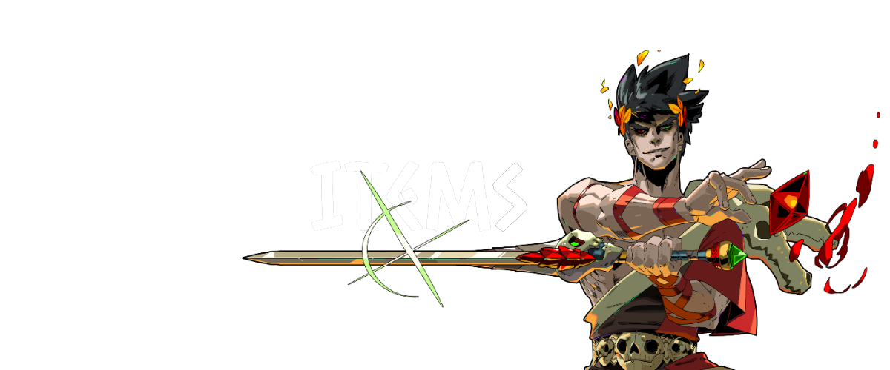
| 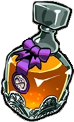 | Ambrosía | 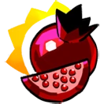 | Granada de Poder |
| Corazón de centauro |  |
Tozo de Poder | |
| 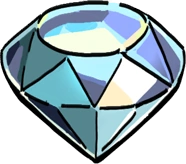 | Diamante | 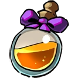 | Nectar |
| 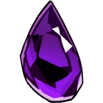 | Oscuridad | 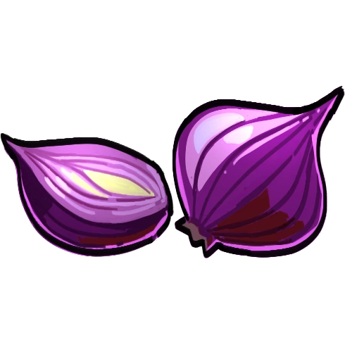 | Cebolla roja |
| 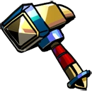 | Martillo de Dédalo | 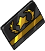 | Tarjeta Leal |
| 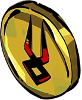 | Monedas | 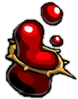 | Sangre de Titan |
| 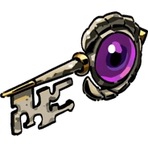 | Llaves | 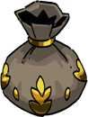 | Bendicion Envuelta |
| 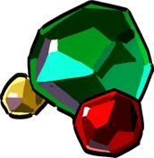 | Gemas | 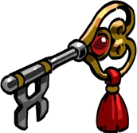 | Nueva Llave Esqueleto |
| 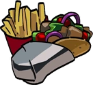 | Comida | 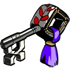 | Llave Esqueleto |
| 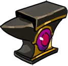 | Yunque del Destino | 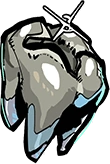 | Diente de la Suerte |
| Armas 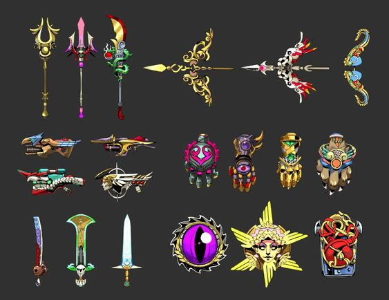 |
|---|